滑动螺旋传动设计
1 滑动螺旋传动的特点
1、摩擦阻力大，传动效率低（通常为30％～60％）压紧力大
2、 结构简单，加工方便
3、 易于自锁
4、 运转平稳，但低速或微调时可能出现爬行
5、螺纹有侧向间隙，反向时有空行程，定位精度和轴向刚度较差（采用消隙机构可提高定位精度）
6、磨损快
该设计的导航面板如下：
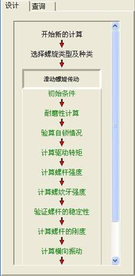
2 滑动螺旋传动设计计算
启动系统开始一个新的设计，点击导航栏中“开始新的计算”按钮，提示用户输入设计信息，如下图所示：
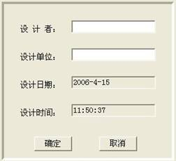
其中，设计者为设计人姓名，单位为设计者工作单位，这两个值均可缺省，缺省后系统按照空白处理，在设计结束后可在报表中手工填写，按“确定”按钮后系统提示选择待设计的螺旋传动类型，如下图所示：
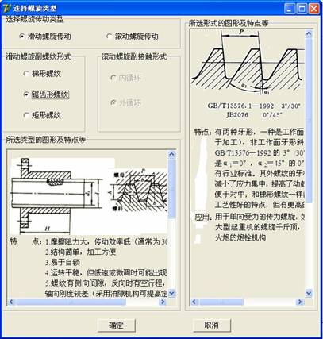
在该界面中提示了常用螺旋传动类型及设计特点，用户选择后点击“确定”按钮。
2.1初始条件输入
本界面主要用来输入滑动螺旋传动相关的初始条件，如下图所示：
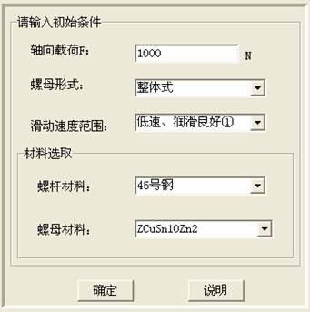
1、轴向载荷，单位为N。
2、选择“螺母形式”、“滑动速度范围”、“螺杆材料”、“螺母材料”。
“确定”：当确认输入参数后点击进入下一步；
“说明”：点击说明按钮弹出网页说明该界面的参数及简单操作。如下图所示：
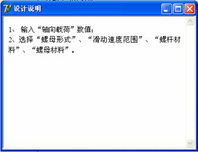
2.2耐磨性计算
本界面进行耐磨性计算，如下图所示：
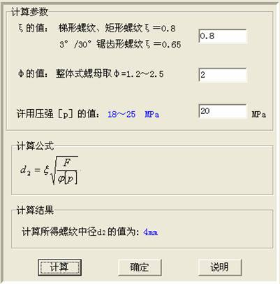
1、输入“φ的值”、“许用压强[p]的值”，但必须在提示范围内，否则，弹出提示对话框，显示输入的数据不合法。
2、“计算”：当计算完成后，“确定”按钮才可用；
“确定”：当点击确定后，弹出“螺杆中径及螺距的确定”对话框；
“说明”：点击说明按钮弹出网页说明该界面的参数及简单操作。
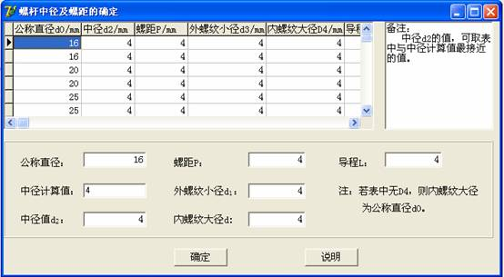
1、选定螺杆的各个参数；
2、“确定”：当点击确定后，返回主界面；
“说明”：点击说明按钮弹出网页说明该界面的参数及简单操作。
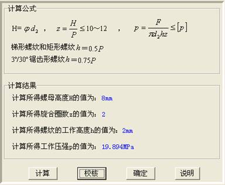
1、“计算”：当点击计算后，“校核”按钮可用；
“校核”：当点击校核后，若校核通过，则“确定”按钮可用，校核通不过，则需返回重做；
“确定”：当点击确定后，进入下一步；
“说明”：点击说明按钮弹出网页说明该界面的简单操作。
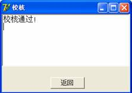 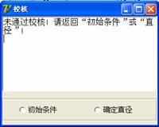
2.3验算自锁情况
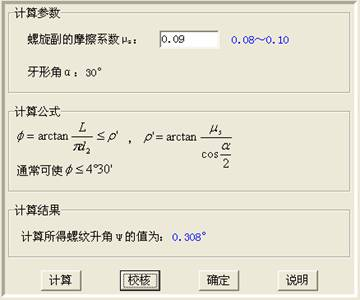
1、输入“螺旋副的摩擦系数μs”，但必须在提示范围内，否则，弹出提示对话框，显示输入的数据不合法。
2、“计算”：当点击计算后，“校核”按钮可用；
“校核”：当点击校核后，若校核通过，则“确定”按钮可用，校核通不过，则需返回重做；
“确定”：当点击确定后，进入下一步；
“说明”：点击说明按钮弹出网页说明该界面的简单操作。
2.4 计算驱动转距
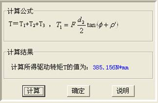
1、“计算”：当点击计算后，“确定”按钮可用；
“确定”：当点击确定后，进入下一步；
“说明”：点击说明按钮弹出网页说明该界面的简单操作。
2.5 计算螺杆强度
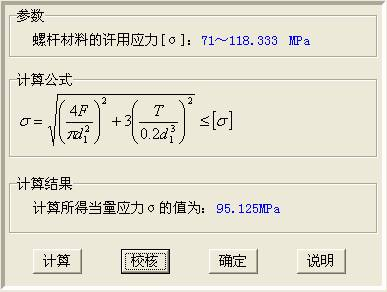
1、“计算”：当点击计算后，“校核”按钮可用；
“校核”：当点击校核后，若校核通过，则“确定”按钮可用，校核通不过，则需返回重做；
“确定”：当点击确定后，进入下一步；
“说明”：点击说明按钮弹出网页说明该界面的简单操作。
2.6 计算螺纹牙强度
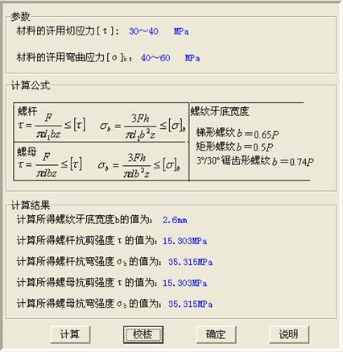
1、“计算”：当点击计算后，“校核”按钮可用；
“校核”：当点击校核后，若校核通过，则“确定”按钮可用，校核通不过，则需返回重做；
“确定”：当点击确定后，进入下一步；
“说明”：点击说明按钮弹出网页说明该界面的简单操作。
2.7 验算螺杆稳定性
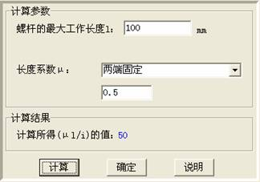
1、输入“螺杆的最大工作长度l”的值；
2、选择螺杆端部结构，从而确定“长度系数μ”；
3、“计算”：当点击计算后，“确定”按钮可用；
“确定”：当点击确定后，进入下一界面；
“说明”：点击说明按钮弹出网页说明该界面的简单操作。
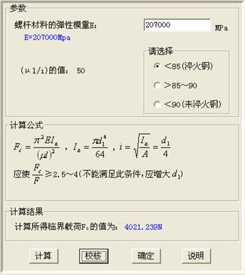
1、输入“螺杆材料的弹性模量”的值，但必须与提示的数值相吻合；
2、根据提示的(μl/i)的值，选择右侧按钮为计算选择公式；
3、“计算”：当点击计算后，“校核”按钮可用；
“校核”：当点击校核后，若校核通过，则“确定”按钮可用，校核通不过，则需返回重做；
“确定”：当点击确定后，进入下一步；
“说明”：点击说明按钮弹出网页说明该界面的简单操作。
2.8 计算螺杆刚度
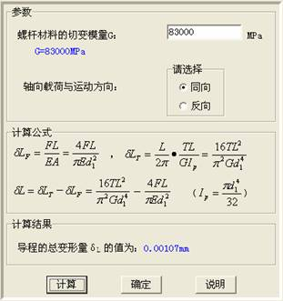
1、输入“螺杆材料的切变模量”的值，但必须与提示的数值相吻合；
2、选择“轴向载荷与运动方向”；
3、“计算”：当点击计算后，“确定”按钮可用；
“确定”：当点击确定后，进入下一步；
“说明”：点击说明按钮弹出网页说明该界面的简单操作。
2.9 计算横向振动
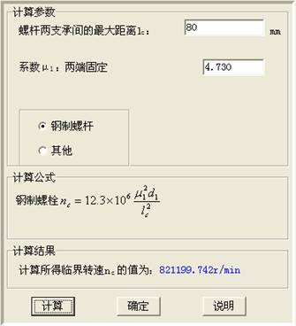
1、输入“螺杆两支承间的最大距离lc”的值；
2、“系数μ1”已由2.7 验算螺杆稳定性 时所选择螺杆端部结构确定；
3、“计算”：当点击计算后，“确定”按钮可用；
“确定”：当点击确定后，进入下一步；
“说明”：点击说明按钮弹出网页说明该界面的简单操作。
2.10 计算效率
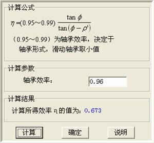
1、输入“轴承效率”的值，但必须在提示范围之内，否则弹出提示对话框，显示输入的轴承效率不合法；
2、“计算”：当点击计算后，“确定”按钮可用；
“确定”：当点击确定后，点击左侧导航板的“结束”按钮，可显示简单报表；
“说明”：点击说明按钮弹出网页说明该界面的简单操作。